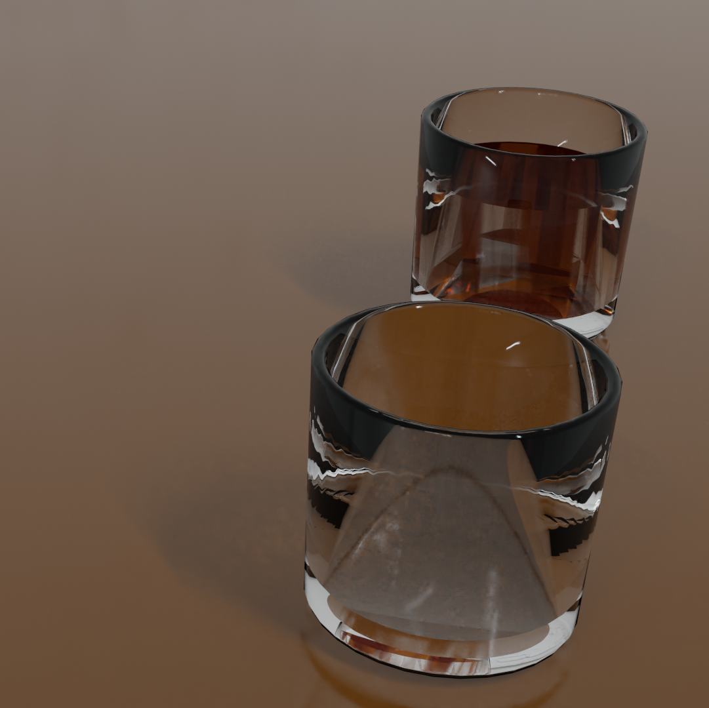
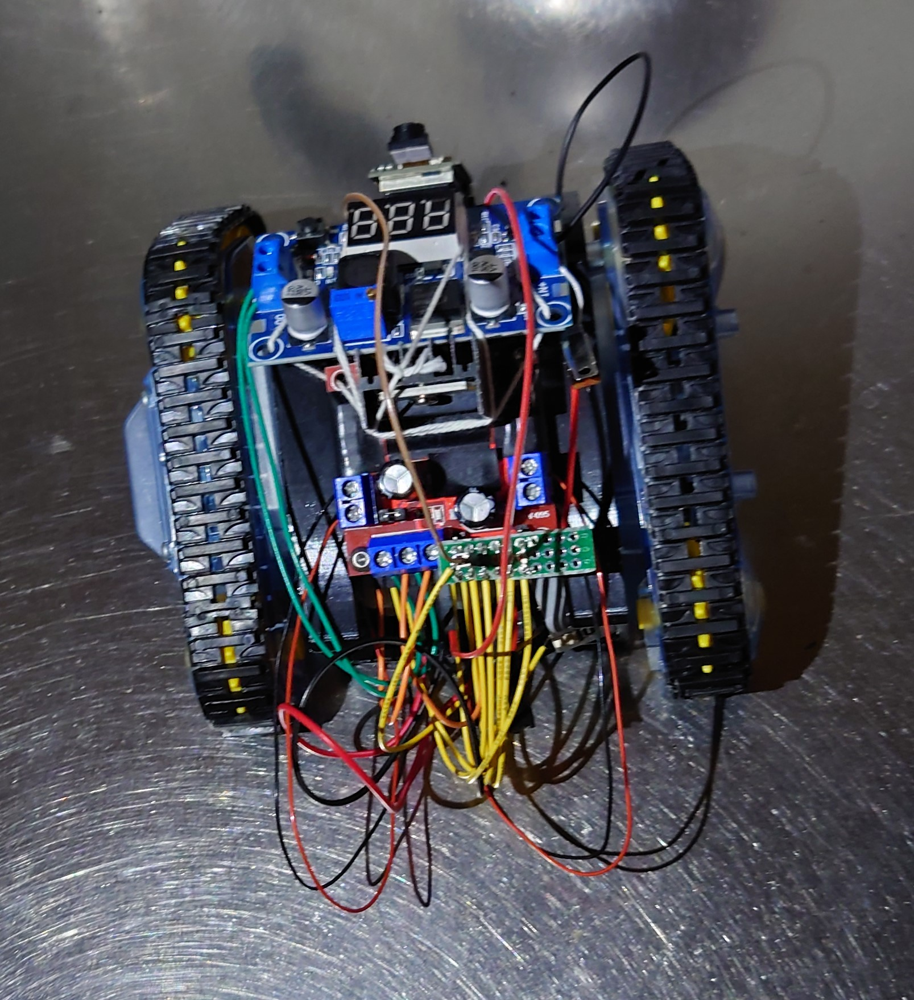
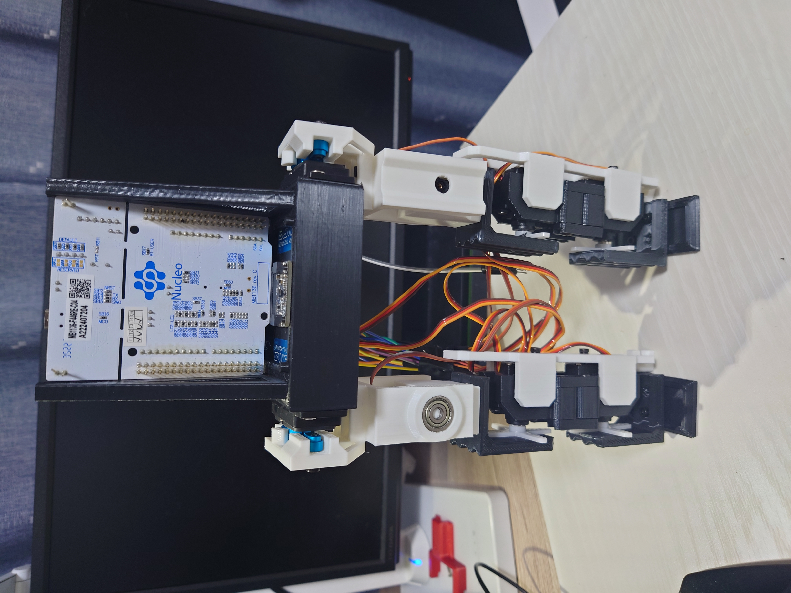

Portfolio
About
Education
Works
Links & Contact
About

中村 秀行
ロボットや強化学習に興味のある学生です。 左の画像はだいぶ前にBlenderでレンダリングした画像です。 最近は、人間の環境で生活できる人型ロボットを作るべくいろいろ試行錯誤しています。
Education
京都大学工学部電気電子工学科（2019/4~2023/3）
京都大学工学部電気電子工学科 石井研究室（2022/4~2023/3）
京都大学大学院情報学研究科 システム科学専攻（2023/4~）
Organization
京大機械研究会（2022/4~）
CAMPHOR-
運営メンバー （2022/11~）
Works
屋上探査用クローラ
CAMPHOR-の天井の状況を観察するためのクローラを作成しました。

理由：拠点が古民家で天井が崩落してきたので、屋上の様子を調べるため。また、動物が屋上を徘徊しているので、何がいるのかを調べるため。
M5MatirxとESP32搭載の無線カメラを載せており、Dabbleを通じて無線操作できます。
このポートフォリオ
技育CAMP 2023 vol.1にて制作したものです。
8自由度二脚ロボット
2023/11/4・11/5で開催された鴨川ハッカソンに参加したときの制作物です。 いずれ人間サイズの人型ロボットを作成して人間生活の支援ができたらよいと考え、 手始めに脚だけの二脚ロボットを制作しました。 主にハードウェアの設計の勉強と、ちゃんと完成させて動作させることを目的としています。 射出成型を模倣して3Dプリント部品の強度を向上させる・ 積層方向を考慮しサポート材を節約するパーツ設計をするなどの工夫をしています。

実際に屈伸して動いている様子です。 順運動学により動作させています。 あえて頑丈過ぎない作りにすることで、自身の運動による振動の影響を軽減させています。
Links & Contact
Twitter
Github